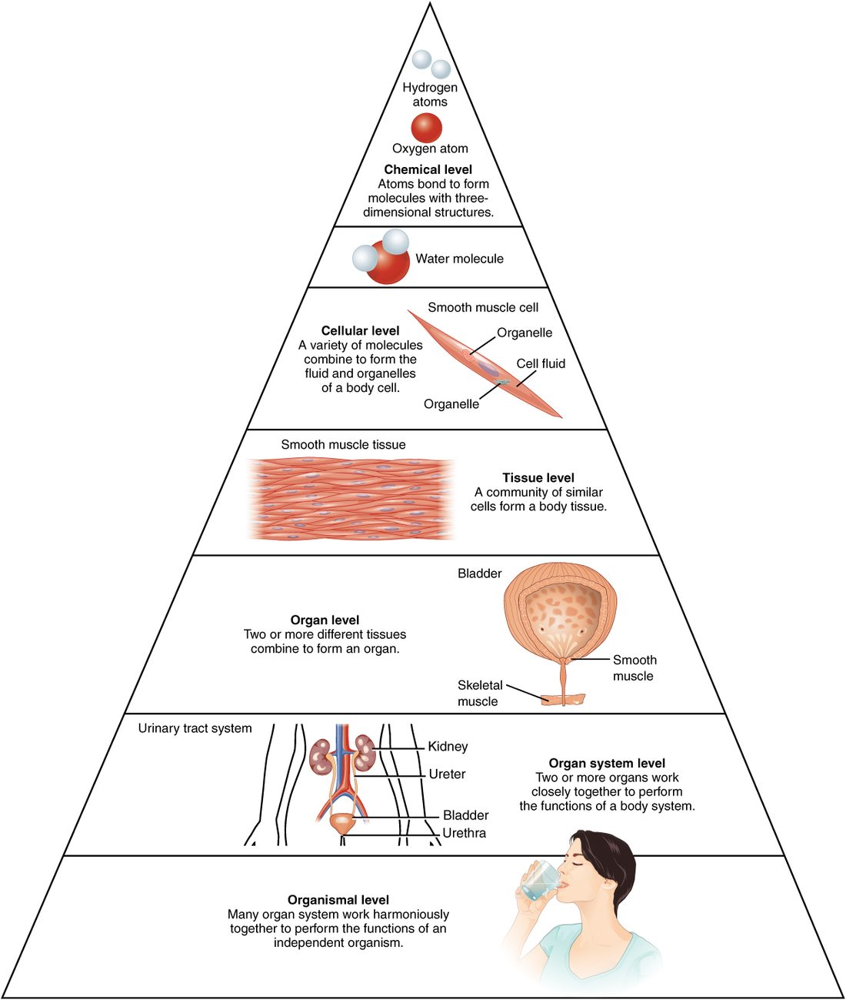

Levels of organization and organ systems
1Why this matters
Mr. Okafor, 58, has kidneys that have almost stopped working. Over a week, his ankles swell, he gets short of breath lying flat, and his heart races. One failing organ has put three organ systems in trouble. To see why, you need to know how the body is built, level by level and system by system.
2What this builds on
This is where the course starts. Nothing comes before it.
3Quick check before you start
No prerequisites: this topic starts from zero.
4Anatomy

5How it works, step by step
- Atoms bond to each other.They form molecules, such as water and the large molecules that build cells.
- Molecules are arranged into working units.Cells form: the smallest units that can carry out the activities of life.
- Similar cells group together with the material around them.Tissues form, such as a sheet of muscle cells that contracts as one.
- Two or more kinds of tissue combine into one structure.An organ forms, such as the stomach, with a job no single tissue can do.
- Several organs work on a shared job.An organ system forms, such as the digestive system.
- All eleven organ systems work together and depend on each other.A whole organism, you, stays alive.
6Core concepts
7A common mistake
The wrong idea: Arteries carry blood high in oxygen and veins carry blood low in oxygen.
What actually happens: Arteries and veins are named by the direction blood flows relative to the heart. Arteries carry blood away from the heart and veins carry it back. Most arteries do carry blood high in oxygen, but the arteries from your heart to your lungs carry blood low in oxygen, and the veins from your lungs back to your heart carry blood high in oxygen.
8Check yourself
Anything you miss goes into your review queue.
1. Put the levels of organization in order, from the smallest and simplest to the largest and most complex.
- Chemical level (atoms and molecules)
- Cell
- Tissue
- Organ
- Organ system
- Organism
Show the answer
Atoms bond into molecules; molecules are arranged into cells; similar cells group into tissues; two or more tissues build an organ; organs that share a job form an organ system; and all the organ systems together make the organism. Each level is built from the one below it.
- Correct order: 1. Chemical level (atoms and molecules) 2. Cell 3. Tissue 4. Organ 5. Organ system 6. Organism
2. A student measures how fast the heart's chambers fill with blood between beats. Which field is the student working in?
- Gross anatomy
- Microscopic anatomy
- Physiology
- Regional anatomy
Show the answer
Measuring how fast chambers fill is studying how the heart works, an event over time. That is physiology.
- Gross anatomy: Gross anatomy would describe the size, shape and position of the heart's chambers, not how fast they fill.
- Microscopic anatomy: Microscopic anatomy would look at heart cells and tissue under a microscope. Filling speed is a working event, not a structure.
- Correct: Physiology: Correct. Physiology studies how structures work, and a filling rate is a measure of function.
- Regional anatomy: Regional anatomy studies all the structures in one body part together, such as the chest. It describes structure, not the speed of an event.
3. The wall of the urinary bladder contains a lining, layers of muscle, and supporting tissue with blood vessels running through it. At which level of organization is the bladder?
- Tissue
- Organ
- Organ system
- Cell
Show the answer
The bladder is built from two or more kinds of tissue, has a recognizable shape and does a specific job (storing urine). That is the definition of an organ.
- Tissue: A tissue is one group of similar cells. The bladder contains several kinds of tissue, so it is a level above tissue.
- Correct: Organ: Correct. Several tissues combined into one structure with one job make an organ.
- Organ system: The organ system is the urinary system: kidneys, ureters, bladder and urethra together. The bladder alone is one of its organs.
- Cell: A cell is a single unit. The bladder is made of millions of cells arranged in tissues.
4. What defines a vessel as an artery?
- It carries blood high in oxygen
- It carries blood away from the heart
- Its wall is a single layer of cells
- It carries blood back to the heart
Show the answer
Vessels are named by the direction of flow relative to the heart. Arteries carry blood away from the heart, whatever its oxygen content.
- It carries blood high in oxygen: Most arteries do carry blood high in oxygen, but not all. The arteries from the heart to the lungs carry blood low in oxygen and are still arteries.
- Correct: It carries blood away from the heart: Correct. Away from the heart defines an artery.
- Its wall is a single layer of cells: A wall one cell thick describes a capillary. Arteries have thick, muscular walls.
- It carries blood back to the heart: Carrying blood back to the heart defines a vein.
5. What does the term metabolism mean?
- All the chemical changes in the body
- The breakdown of food inside the stomach
- The rate at which the heart beats
- The increase in the number of cells
Show the answer
Metabolism (meta- = change, bol = throw) is every chemical change in your body: building large molecules from small ones, which uses energy, and breaking large molecules down, which releases energy.
- Correct: All the chemical changes in the body: Correct. Metabolism covers both building up and breaking down, in every cell.
- The breakdown of food inside the stomach: Breaking food down in the stomach is digestion, one small part of the body's chemical activity.
- The rate at which the heart beats: Heart rate is one measure of cardiovascular function, not the definition of metabolism.
- The increase in the number of cells: More cells means growth. Metabolism supplies the energy and materials for growth, but it is not the same thing.
6. On a cold day your skin cools, your muscles start small, rapid contractions that make heat, and your body temperature stays near 37 °C. What does this show?
- Body temperature can never change
- The body keeps an internal condition within a normal range
- Muscles work only in cold weather
- The outside temperature sets the temperature inside your body
Show the answer
A change (cooling) is detected and triggers a response (heat from muscle contractions) that pushes temperature back. The result is a value held within a normal range. The feedback loop topic later in Foundations shows the full mechanism.
- Body temperature can never change: Body temperature does change, which is why the response is triggered. It is kept within a range, not fixed at one value.
- Correct: The body keeps an internal condition within a normal range: Correct. Detecting a change and pushing the value back keeps it within its normal range.
- Muscles work only in cold weather: Muscles work in every temperature. The heat-making contractions are one response among the many things muscles do.
- The outside temperature sets the temperature inside your body: If the outside temperature set body temperature, you would cool along with the air. The scenario shows the opposite.
9Summary
Anatomy studies structure; physiology studies how structures work, and what a structure can do follows from how it is built. Your body is organized in six levels: chemical, cell, tissue, organ, organ system and organism. Each level is built from the one below and gains abilities its parts lack. Eleven organ systems each have major organs and a main job, and they depend on each other. Arteries carry blood away from the heart, veins carry it back, and capillaries exchange materials with cells. Living things share a set of characteristics, and your body holds many internal conditions within a normal range.